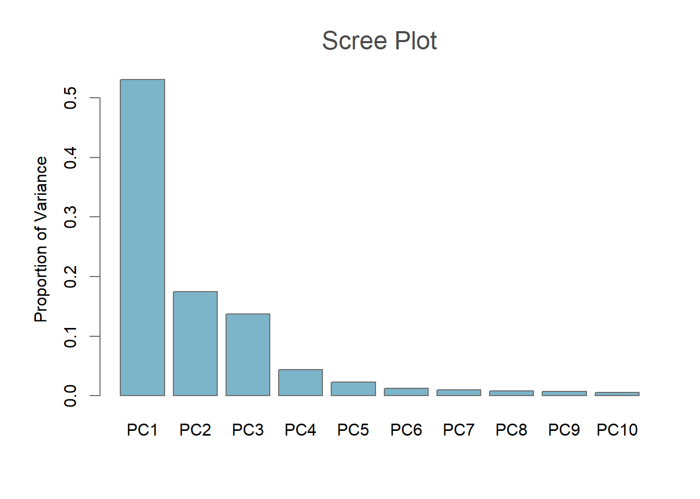

Our workflow uses the Functional Normalization approach (K. D. Hansen et al. 2014), which exploits internal control probes designed to detect technical variations without assaying biological differences. It has been shown to perform favourably when compared to other approaches (Heiss and Brenner 2015, Liu and Siegmund (2016)).
Using the internal control probes avoids the problems associated with global normalization methods, where biological variation can be mistaken for a technical effect and removed. This is especially important in studies where groups are expected to have differential methylomes, such as multiple tissue studies (Min et al. 2018).
Since the default of selecting only two principal components is often too restrictive for this type of data, our screeplot() function allows visualisation of eigenvalues to help select the optimal number. Often you will see a drop-off in proportion of variance explained after a certain number of principal components, and this can indicate an efficient cut-off.
par(mar=c(5,5,4,2), mgp=c(2.5,1,0), cex.main=1.5, font.main="1", fg="#6b6b6b", col.main="#4b4b4b")
pc <- screeplot(RGset)
This plot shows that only a small amount of variance is explained after the fourth principal component. For this reason, we choose to carry out normalization using 4 principal components.
By default, functional normalization returns normalized copy number data making the returned GenomicRatioSet twice the size necessary when only beta-values or M-values are required. Therefore, we developed preprocessFunnorm.DNAmArray(), which adds an option not to return these to the preprocessFunnorm() function from minfi (Aryee et al. 2014).
GRset <- preprocessFunnorm.DNAmArray(RGset, nPCs=6, keepCN=FALSE)## [preprocessFunnorm] Modified version not returning CN!
## [preprocessFunnorm] Background and dye bias correction with noob
## [preprocessFunnorm] Mapping to genome
## [preprocessFunnorm] Quantile extraction
## [preprocessFunnorm] NormalizationGRset## class: GenomicRatioSet
## dim: 485512 138
## metadata(0):
## assays(1): Beta
## rownames(485512): cg13869341 cg14008030 ... cg08265308 cg14273923
## rowData names(0):
## colnames(138): GSM3092700_9985178096_R01C01
## GSM3092701_9985178127_R03C02 ... GSM3093566_9020331152_R05C01
## GSM3093567_9020331152_R06C01
## colData names(38): title public_date ... yMed predictedSex
## Annotation
## array: IlluminaHumanMethylation450k
## annotation: ilmn12.hg19
## Preprocessing
## Method: NA
## minfi version: NA
## Manifest version: NAThis function returns beta-values calculated with an offset of 100, similar to specifying getBeta() with option type='Illumina'. If required, these can be transformed to M-values using minfi’s getM() which applies a logit2-transformation to the beta-values.
From inspecting the GenomicRatioSet object, you can see that there is one Beta assay, with methylation values for 485,512 CpG sites.
Aryee, Martin J., Andrew E. Jaffe, Hector Corrada-Bravo, Christine Ladd-Acosta, Andrew P. Feinberg, Kasper D. Hansen, and Rafael A. Irizarry. 2014. “Minfi: A flexible and comprehensive Bioconductor package for the analysis of Infinium DNA methylation microarrays.” Bioinformatics 30 (10). Oxford University Press: 1363–9. doi:10.1093/bioinformatics/btu049.
Hansen, Kasper D, Mathieu Lemire, Thomas J Hudson, Elana J Fertig, Celia MT Greenwood, Jean-Philippe Fortin, Aurélie Labbe, and Brent W Zanke. 2014. “Functional normalization of 450k methylation array data improves replication in large cancer studies.” Genome Biology 15 (11). BioMed Central: 503. doi:10.1186/s13059-014-0503-2.
Heiss, Jonathan A, and Hermann Brenner. 2015. “Between-array normalization for 450K data.” Frontiers in Genetics 6. Frontiers Media SA: 92. doi:10.3389/fgene.2015.00092.
Liu, Jie, and Kimberly D. Siegmund. 2016. “An evaluation of processing methods for HumanMethylation450 BeadChip data.” BMC Genomics 17 (1). BioMed Central: 469. doi:10.1186/s12864-016-2819-7.
Min, J L, G Hemani, G Davey Smith, C Relton, and M Suderman. 2018. “Meffil: efficient normalization and analysis of very large DNA methylation datasets.” Bioinformatics (Oxford, England) 34 (23). Oxford University Press: 3983–9. doi:10.1093/bioinformatics/bty476.